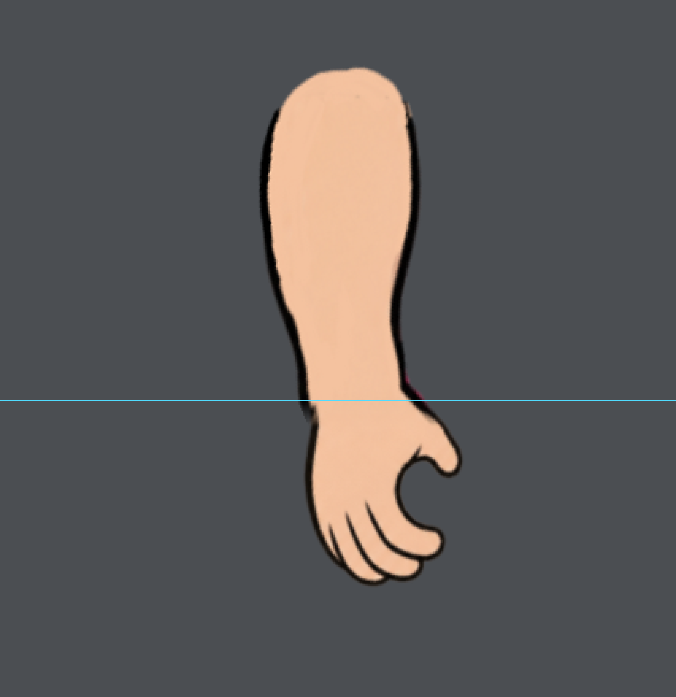
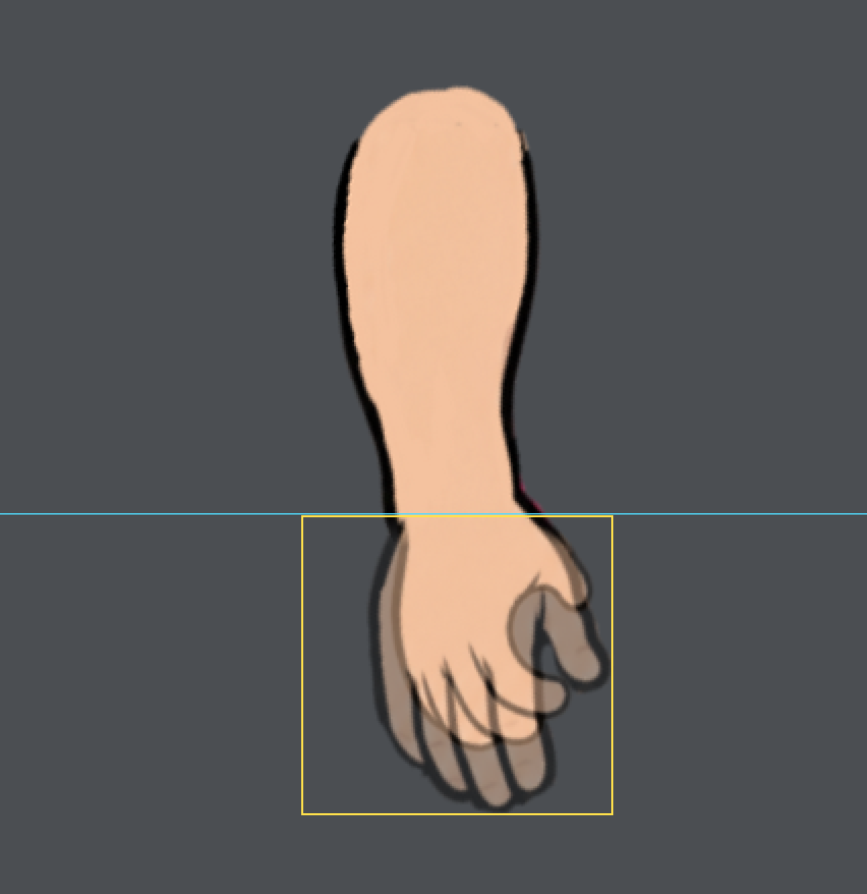
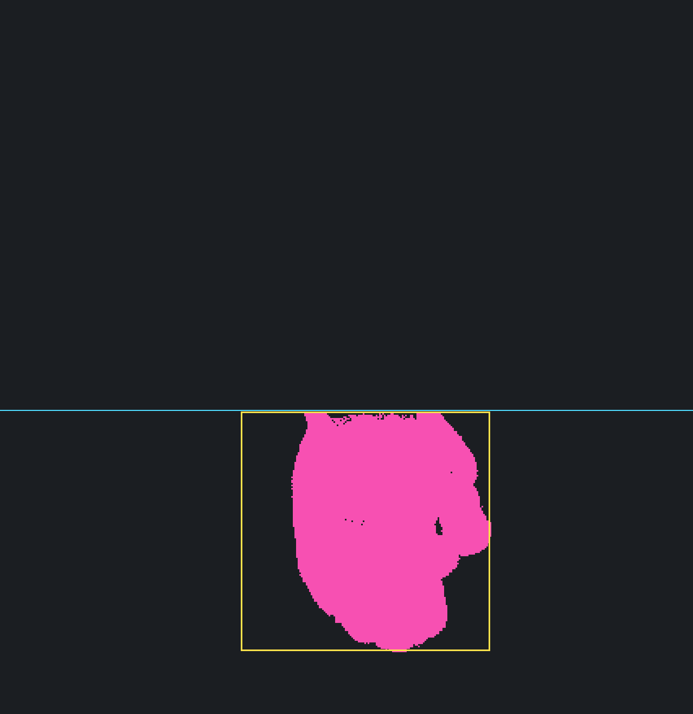

clasp
clasp
overlay
diff
426×439 canvas, original elbow pivot. Rows 0–252 inclusive are copied pixel for pixel from George’s forearm.png, including transparent RGB. Only the hand side of that wrist boundary changes. No Lou wrist oval or elbow notch is transplanted. Uncommitted candidates for Opus review.
Each panel uses the identical canvas and pose. Overlay = 50% base + 50% clasp. Magenta = changed RGBA pixel, yellow rectangle = actual changed bounds, cyan line = wrist boundary. Open an image for full 3× pixels. Raw binary masks have no annotations.
| Clasp | Old changed shaft px | New changed shaft px | All changed px | Changed bounds |
|---|---|---|---|---|
| collarTie | 18861 | 0 | 13746 | [148, 253, 301, 400] |
| elbowCup | 18894 | 0 | 14786 | [128, 253, 301, 400] |
| waistClasp | 18546 | 0 | 13716 | [174, 253, 301, 430] |
Combined proof · Raw pixel diff
Combined proof · Raw pixel diff